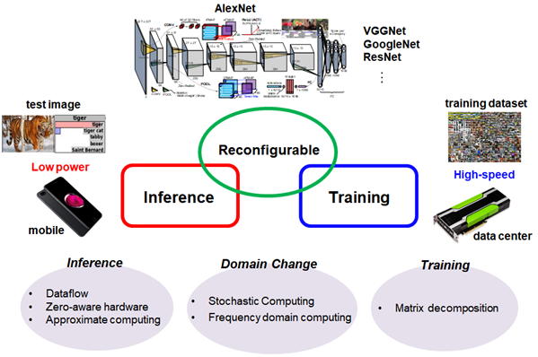
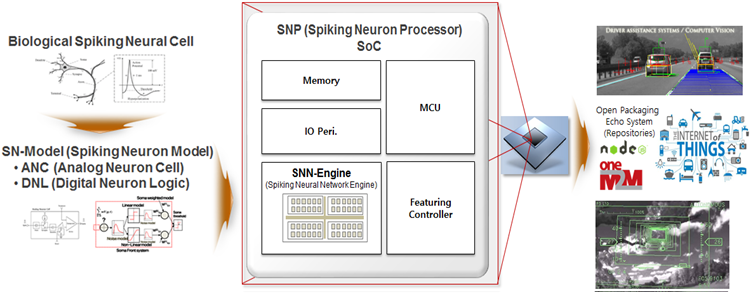

Convolutional Neural Network

Convolutional neural network (CNN) is one of the most widely used neural network models for image pattern recognition.
The latest CNN models have better performance than humans, but they require a lot of computational complexity and huge
data storage space. Due to its large input datasets and weight parameters for convolution operations,
a high-speed and low-power(energy) ASIC design to accelerate CNN operations becomes very important.
Our research focus is a CNN accelerator design for energy efficient inference/training of various CNN models
by applying the following techniques.
- Dataflow which maximizes throughput per energy consumption
- Zero-aware hardware architecture (zero weight from pruning-training, zero input from ReLU-inference)
- Approximate computing techniques for low power consumption
- Various implementation techniques based on domain change
- Training architecture optimization
- Reconfigurable CNN accelerator which can adapt to various CNN specifications
Spiking Neural Network

Spiking neural network (SNN) is a brain-inspired network to realize neuromorphic system.
The focus of our current research is developing the area efficient spiking neural model and accurate
learning method for the SNN. Also implementation of the SNN is our another research focus to enable
low power consumption and energy efficient computation for wide range of tasks. The followings are research topics:
- Preprocessing method for improving the accuracy of computation
- Learning method for synaptic weights of the spiking neuron network
- Hardware efficient SNN architecture